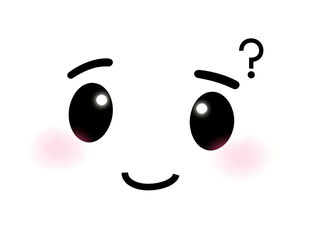

Thinking 状态 — 320×240 横屏 · 风格 C
左
1×
实际像素，右
2×
放大看动效。 表情图
thinking_thinking.png
原生 320×240，1:1 完美填满，无裁切。 三色点叠在画面底部最高 z 序。
1× 实际像素 (320×240)

320 px × 240 px · ratio 4:3
2× 放大 (看动效)
⏯ 暂停 / 播放
三个
lv_obj
圆点 · 直径 12 px · 间距 12 px · 距底 14 px
每点
lv_anim
周期 1050 ms · 相位错开 180 ms · 弹起 −10 px · 透明度 55%→100%
颜色：
●
#ff6b6b
●
#ffd93d
●
#6bcb77